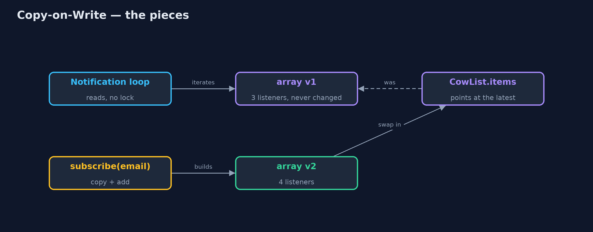
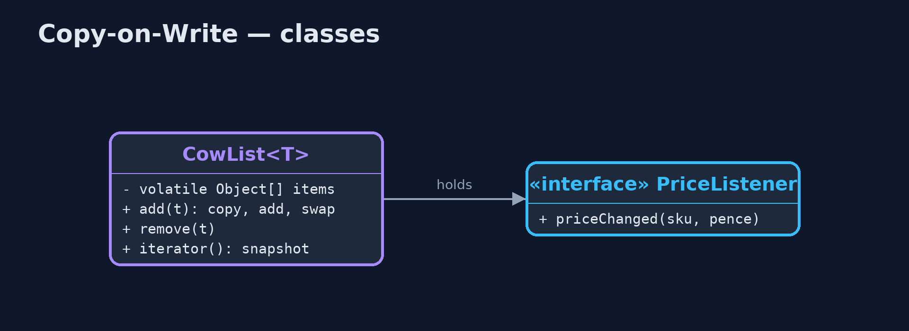
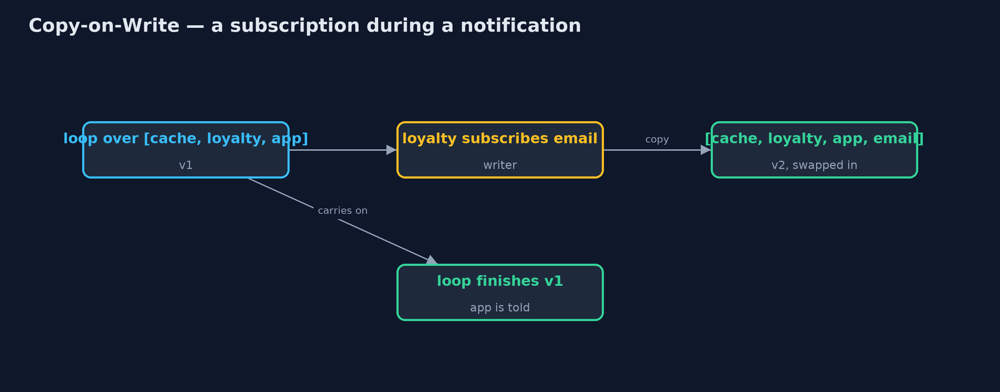
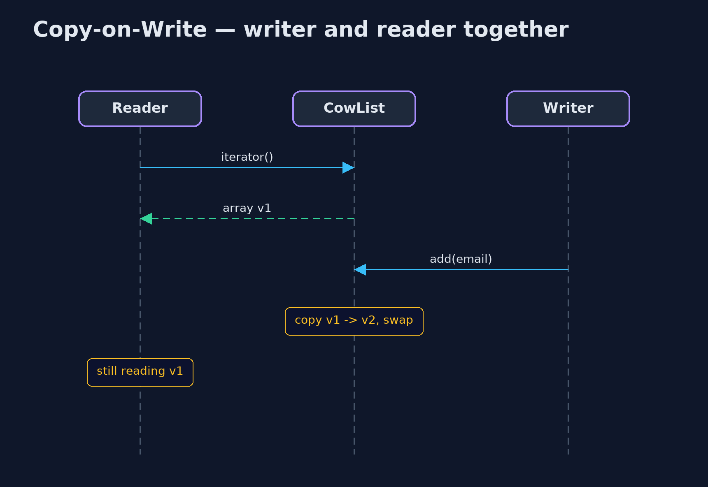

Copy-on-Write Pattern
src/main/java/com/jk/explore/copyonwrite/
├── CopyOnWriteDemo.java The five acts: a plain list changed while being read, a copy-on-write list, readers with no locks, snapshots, and the bill
├── CowList.java The pattern, written out: readers use the current array with no lock; a writer copies it, changes the copy, and swaps it in
└── PriceListener.java Something that wants to hear when a product's price changes: the web page cache, the app, the email serviceLet readers use the current copy with no locks at all, and make every writer copy the whole thing, change the copy, and swap it in.
Copy-on-Write is a concurrency pattern for data that is read far more often than it changes. Readers use the current version directly, with no locks. A writer never changes that version: it copies it, changes the copy, and replaces the current version with the copy in one step. A reader half way through the old version carries on undisturbed, and the next reader sees the new one.
Java's CopyOnWriteArrayList and CopyOnWriteArraySet work this way, and they are the usual home for lists of listeners.
The idea in everyday terms
Think of a restaurant's printed menus. Diners read them at their tables, as long as they like. To change a dish, the manager does not cross it out on the menus in people's hands; they print a whole new batch and swap them in at the door. Diners already reading finish with the old menu; new diners get the new one. Reprinting for every small change is expensive, so it suits menus that rarely change.
The scenario
When a product's price changes, the online store tells a list of listeners: the web page cache, the loyalty service, the phone app. Prices change constantly; the list of listeners rarely does. The list was a plain ArrayList, and when the loyalty service subscribed the email service while being told about a price change, the notification loop crashed half way.
Run
./gradlew runThe demo tells the story in 5 acts, each printing exact numbers that the tests check:
| Act | What it shows |
|---|---|
| 1. A plain list, changed while read | The loyalty service subscribes the email service mid-notification: ConcurrentModificationException; the phone app never hears. |
| 2. A copy-on-write list | The same thing with a copy-on-write list: all 3 listeners hear the first change, all 4 hear the next. |
| 3. Readers never lock | 100,000 notification passes while another thread subscribes and unsubscribes 1,000 times: 0 failures, 0 reader locks. |
| 4. Snapshots | A reader started with 3 listeners; a fourth was added; the reader finishes with 3. |
| 5. The bill | Adding 10,000 listeners one at a time copies 49,995,000 references. |
Test
./gradlew test7 tests in CowListTest, DemoRunsTest. Every number the demo prints is asserted, and nothing depends on the clock, so every run gives the same result.
Technologies and versions
| Technology | Version | Used for |
|---|---|---|
| Java | 21 | the code (toolchain set in build.gradle) |
| Gradle | 9.2.1 (wrapper) | build and run, nothing to install |
| JUnit | 5.10.2 | the tests |
| videokit | repository tool | the narrated video and animation: Piper en_US-amy-medium, speed 0.8, longer pauses (the approved amy-slow voice) |
Learning Material
| Document | What it is for |
|---|---|
| Problem statement | the situation and what the project must show |
| Prerequisites | what you need to know first |
| Copy-on-Write, explained | the acts in prose |
| Session guide | a one-hour lesson with exercises |
| Animated walkthrough | the acts step by step, narrated |
| Spec | what this project must be true of |
The pattern in one picture
Readers read the current array; a writer builds the next one.

Where each piece sits
A volatile array, copied by writers.

How the data moves
The loop never sees a half-changed list.

Who calls whom, in order
Neither waits for the other.

Video
video/copy-on-write-pattern-explained.mp4 (with .m4a audio and .srt subtitles) is built by video/build_video.sh. Rendered media is not committed.
What it costs
- Every write copies everything. Adding 10,000 listeners one by one copied almost 50 million references.
- Readers may see an old version. A reader that started before a change finishes with the old list.
- Writers wait for each other. Writes are serialised by a lock.
When this is too much
For data that changes often, such as a shopping basket or an order queue, copying on every write is far too costly: use a concurrent collection or a lock instead. Copy-on-write is for small collections that are read constantly and changed rarely.
Where you have already met this
java.util.concurrent.CopyOnWriteArrayListandCopyOnWriteArraySet.- Listener and observer lists in Swing, Spring and many libraries.
- Linux's
fork(), which shares memory between processes until one writes to it. - Snapshots in file systems such as ZFS and Btrfs.
Where this sits
This project is in concurrency-design-patterns, next to Read-Write Lock, which also favours readers but makes them take a lock, and near Immutable Object, the idea copy-on-write is built on.